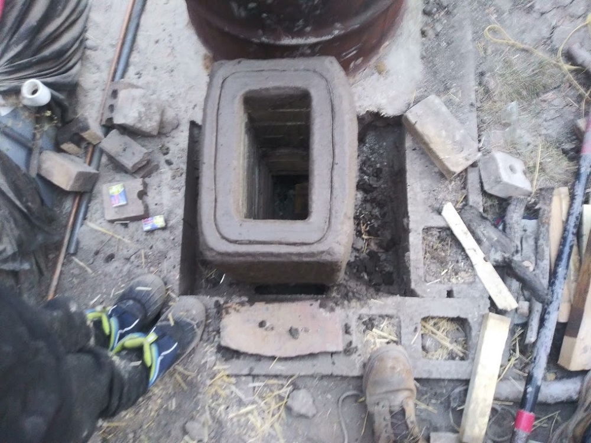
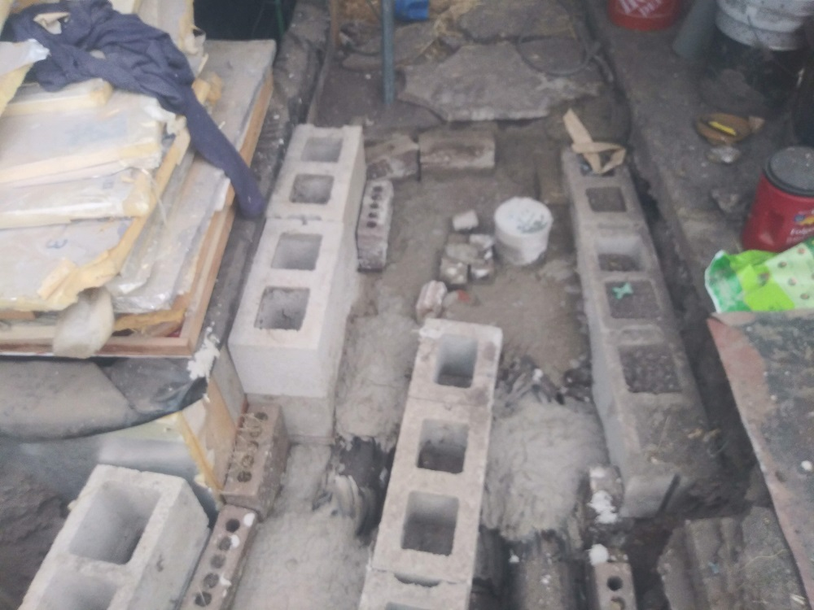

This is a small tutorial on how to build A rocket mass heater.
There will be words and pictures from the project I did at home with friends
and family and things I learned along the way
This system is in a 20 x 15 ft greenhouse with with a sloped ceiling with an average height of
about 10 feet. 200 dollars worth of wood keeps the greenhouse warm all winter long (about 4 months).
Compared to a traditional fireplace that is about 1/10 the wood you would use, and it keeps all the
heat in its system instead of just releasing it straight through the chimney like a traditional
fireplace
All the clay I used in this tutorial was hand dug in the desert,
If anyone has any questions on where they can find clay to dig themselves feel free
to ask. Things that need to be purchased are, sand (unless you can find your own in nature)
, metal drum (which you can find for free alot of the time) and the chimney/exhaust piping
which you can make out of clay if you feel up to it.
To the right are rough
pics of what it looks like while being assembled. Pretty much all earthen material can be used
stone, sand, rocks, dirt, etc. of course you can add stones, tile, any non flammable
material you can think of to design the outside of yours, to pretty it up the way you like.
Slight bits of info will be added to the bottom of each photo, the point of this write up is to give
you a general idea of how this works and give you knowledge on how well this works as a heat source,
or just something to show off.
14 / 20

This is the beginning of the build there is one layer of brick underneath the layers
you
see I unfortunatly did not get a picture of. But just remember it needs a tunnel from on side to the
other like you can see
15 / 20

I dug a hole and surounded my build with cinder blocks and filled it with sand to help
hold in even more heat.
3 / 20
This is the feed(where the wood goes)
2 / 20
Unlike a traditional fireplace the fire burns sideways which I think is one of the
coolest parts about these systems.
11 / 20
The fire burns sideways because of the thermal draft created as the hot air moves
up the riser(short chimney inside of the metal barrel)
and cools when it hits the metal barrel causing the hot air to drop and this continously happens
causing a pulling effect
(draft)
13 / 20
This is the most important part of the build the fire riser and fire feed
you want it to be atleat a 1 to 3 ratio 1 to 4 is better meaning you fire riser is
4x the height of you your fire feed, it premotes good draft!
16 / 20
The clay perlite mixture covering the riser you see here is very important the perlite
provides insulation without the insulation the risers inside and outside temperature would equalize,
without the rise and fall in temperature you would get drafting issues.
5 / 20
This is where the magic happens the hot air from the fire hits the top of the inside
of the barrel cools the air causing it to drop down the sides of the barrel and begins its way into
the exhaust.
6 / 20
the silver cleanout cap you see at the bottom of the barrel is the start of the
exhaust
9 / 20

This is the fire feed after it has been built to the height that I want it
and smoothed out to look nice.
10 / 20
When building things with clay it is important that you use the right sand
to clay mixture i used about a 1 part clay to 4 part sand ratio, you could even go 5 parts sand.
17 / 20
Random photo of a mud/clay brick wall I made to help hold the material around the piping.
18 / 20

This is the exhaust/chimney piping.
19 / 20
This is the 180deg turn that wraps back around to the actual chimney.
4 / 20

As you can see here the piping gets covered in mud/clay sand mixture for strength
and to help hold the heat in, this wil be burried by about 8 inches of dirt so it can be walked on.
20 / 20
This is the final stretch of underground chimney pipe before it leaves the greenhouse
7 / 20
Base of chimney where it first leaves the greenhouse
8 / 20
My almost finished chimney is about 9 feet tall
1 / 20
Its good to have a nice tall chimney its good for the thermal draft.
❮
❯